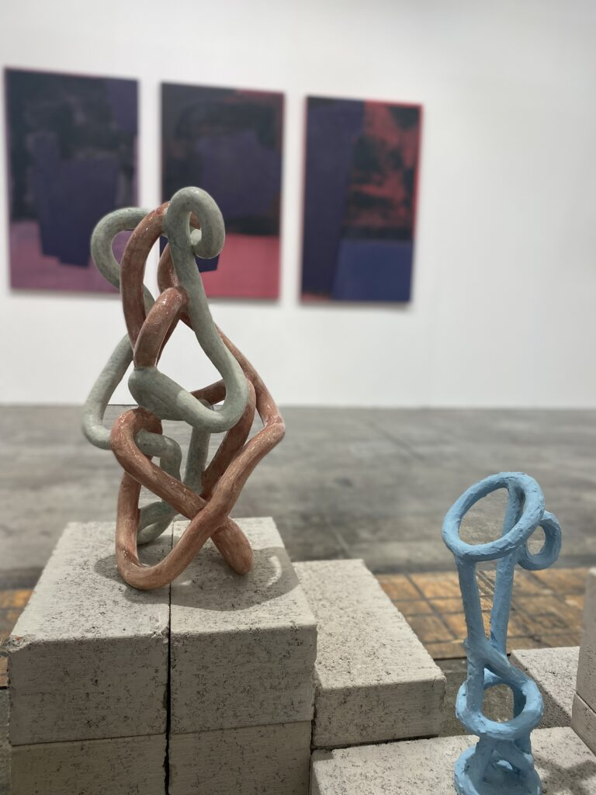

1/20/26
Long-form writing, research articles, and cultural inquiry. Exploring identity, geography, and the spaces between.
1/20/26

5/28/19

12/4/18
It All Begins Here
Read More
1/18/26

5/28/19

11/15/25

8/3/25
Understanding how physical environments — from townships to coastlines — actively shape identity and behaviour.
Read More
6/12/25
Rethinking creative and research practices through the lens of interdependence, community, and shared becoming.
Read More